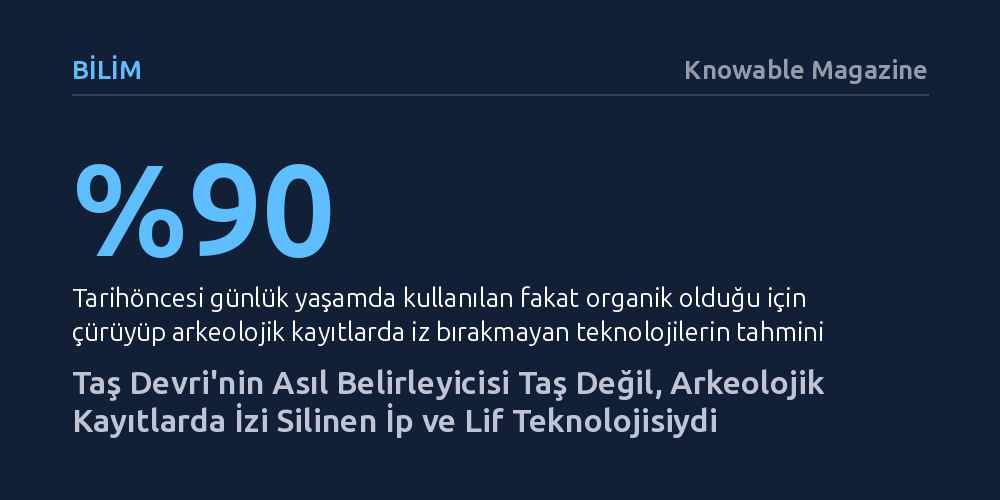

BILIM · Knowable Magazine · 2026-09-11
Arkeolojik deneyler ve mikroskobik kanıtlar, Taş Devri'nde günlük yaşamı ve avcılığı taş aletlerden ziyade organik lif ve ip teknolojisinin belirlediğini gösteriyor. Çürüyüp günümüze ulaşamayan bu yumuşak teknolojiler, insan evrimindeki en büyük sıçramaların görünmeyen temelini oluşturdu.
İnsanlık tarihini yalnızca taş aletler üzerinden okuma yanılgısını yıkarak, ilk toplulukların hayatta kalmasını ve alet devrimini çürüyüp kaybolan organik liflerin sağladığını gösterir.

Almanya'nın güneyindeki Hohle Fels mağarasında 2015 yılında keşfedilen, mamut fildişinden oyulmuş 20 santimetrelik delikli çubuk (lochstab), ilk bulunduğunda araştırmacılar tarafından prestij ya da güç simgesi olan ritüel bir nesne olarak yorumlanmıştı. Üzerinde dört delik bulunan bu parça, aynı mağarada daha önce gün ışığına çıkarılan dünyanın en eski flütleri ya da ünlü Hohle Fels Venüsü kadar gösterişli durmuyordu. Ancak çubuğun deliklerinin içine özenle spiral yivler açıldığının fark edilmesi, nesnenin işlevine dair bambaşka bir ihtimali gündeme getirdi.
Kazı başkanı Nicholas Conard ve arkeolog Veerle Rots, deliklerin bir malzemeyi bükerek geçirmek için tasarlandığını fark ederek aletin replikasıyla laboratuvarda deneyler yürüttü. Deliklerden sazlık lifleri geçirildiğinde içteki yivlerin lifleri kusursuz şekilde yönlendirdiği görüldü ve ekip yalnızca 10 dakika içinde beş metre uzunluğunda kalın ve son derece sağlam bir halat örmeyi başardı. Conard'ın ifadesiyle, "Bir şeyi bir delikten geçirip döndürüyorsanız, çok geçmeden kendinizi lif dünyasında bulursunuz."
Hohle Fels'teki deney bir gizemi çözse de tarihöncesi araştırmalarındaki devasa bir zaafı gözler önüne serdi. Mağara sakinleri şüphesiz muazzam miktarlarda ip ve halat üretmişti; fakat aradan geçen on binlerce yılda bu organik ürünlerin hiçbiri günümüze ulaşamamıştı. Geriye yalnızca bu üretim zincirinin en sert ve dayanıklı parçası olan fildişi çubuk kalmıştı.
Paleoantropologlar bu durumu arkeolojik kayıtlardaki derin bir yanlılık olarak değerlendiriyor. Günümüze kadar çürümeden kalabilen nesneler neredeyse sadece taş ve kemikten ibaret olduğu için insanlığın geçmişi yalnızca bu sert malzemeler üzerinden kurgulanıyor. Oysa uzmanlara göre Taş Devri'ndeki sıradan bir günün yüzde 90'ından fazlası, bugün izine rastlayamadığımız çürüyebilir bitkisel ve hayvansal lif teknolojilerine dayanıyordu.
Doğrudan ip kalıntılarının nadirliği bu tabloyu özetliyor. İnsan eliyle bükülmüş günümüze kalan en eski lif, Fransa'daki Abri du Maras sığınağında bulunan ve Neandertaller tarafından yaklaşık 50 bin yıl önce üretilen yalnızca altı milimetrelik üç katlı minik bir ip parçasından ibarettir.
İp ve lifler sadece kendi başlarına birer araç değil, farklı teknolojileri bir araya getiren dönüştürücü bir bağlayıcıydı. Yaklaşık 250 bin yıl öncesine ait taş aletlerin üzerindeki mikroskobik aşınma izleri, taşların ahşap saplara iple bağlandığını, yani saplama tekniğinin kullanıldığını gösteriyor. Basit bir yontma taşın ahşap gövdeye bağlanmasıyla mızrak veya saplı balta elde edilmesi, aletin kullanım açısını ve darbe gücünü katlayarak insanlık tarihinde devrim yarattı.
Lif teknolojisi lojistik ve beslenme stratejilerini de temelden değiştirdi. Erken insan akrabalarının 3 milyon yıl önce alet yapımında kullanılan ağır taşları kilometrelerce uzağa taşıyabilmesi, muhtemelen lif veya deriden yapılan taşıma fileleri ve torbalar sayesinde mümkün olmuştu. Ayrıca liflerden örülen ağlar ve tuzaklar, insanın başında beklemesini gerektirmeyen "pasif avcılığı" başlattı; İspanya'daki 7 bin 500 yıllık kaya resimlerinde görülen ip merdivenler ise insanların yüksek kayalıklardaki yabani arı kovanlarına erişebilmesini sağladı.
Taş Devri insanlarının günlük temposunu belirleyen asıl uğraş taş yontmak değil, lif üretimiydi. Çakmaktaşından kesici bir dilgi çıkarmak anlık bir işlemken; bitkisel lif toplamak, ıslatmak ve örmek mevsimsel planlama ve haftalarca süren yoğun bir grup emeği gerektiriyordu. Etnografik çalışmalar, günümüzde Yeni Gine'deki Wola yerlilerinin ürettikleri alet ve eşyaların yüzde 95'inde lif kullandığını ve tek bir lif çanta için 14 saatlik hammadde toplamanın ardından 65 ila 80 saatlik bükme mesaisi harcadıklarını belgeliyor.
Benzer şekilde Neandertallerin çam ağacı iç kabuğundan lif elde edebilmesi, yalnızca özsuyun yükseldiği ilkbahar ve erken yaz aylarında mümkündü. Toplanan kabukların liflerine ayrılması için iki hafta suda bekletilmesi gerekiyordu. Dolayısıyla Taş Devri topluluklarının hareketliliğini, mevsimsel kararlarını ve toplumsal organizasyonunu taş aletler değil; ip, sepet, ahşap işleme ve deri tabaklama gibi çürüyüp yok olan yumuşak teknolojiler şekillendiriyordu.